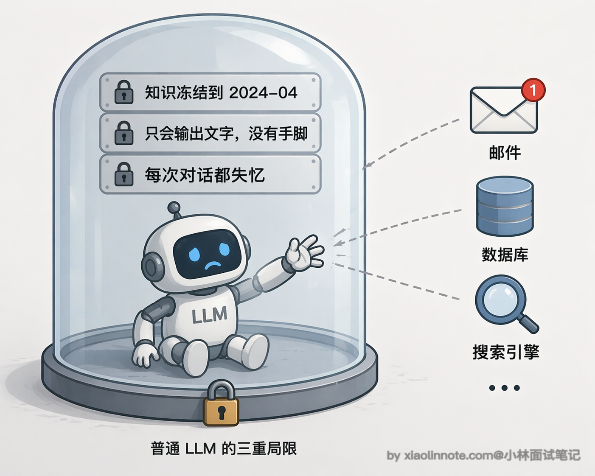
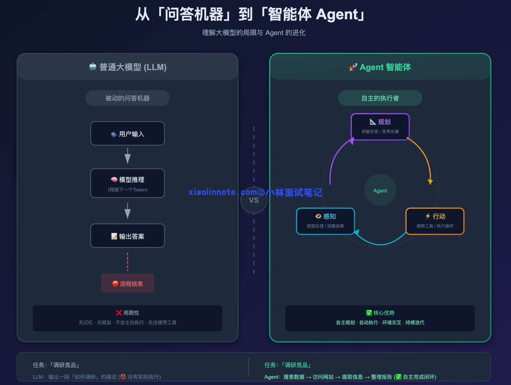
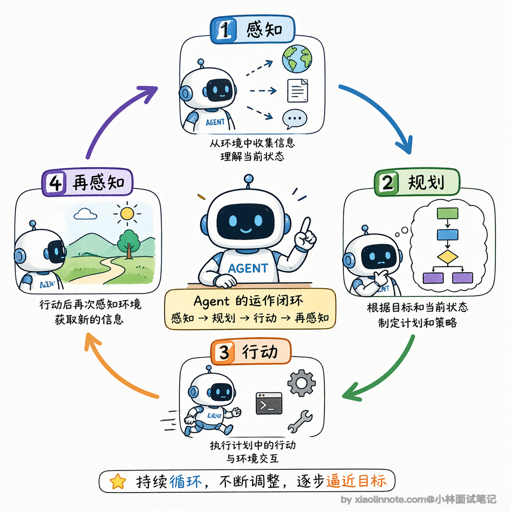
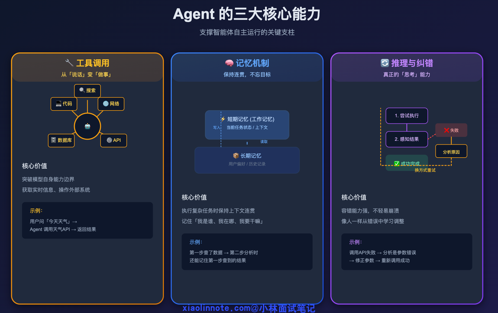
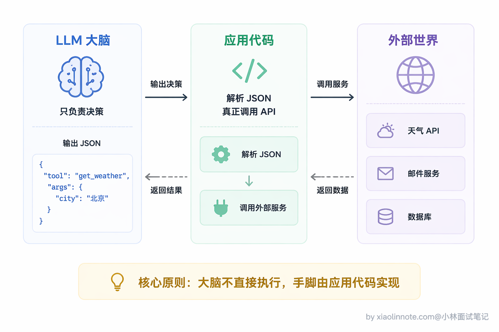
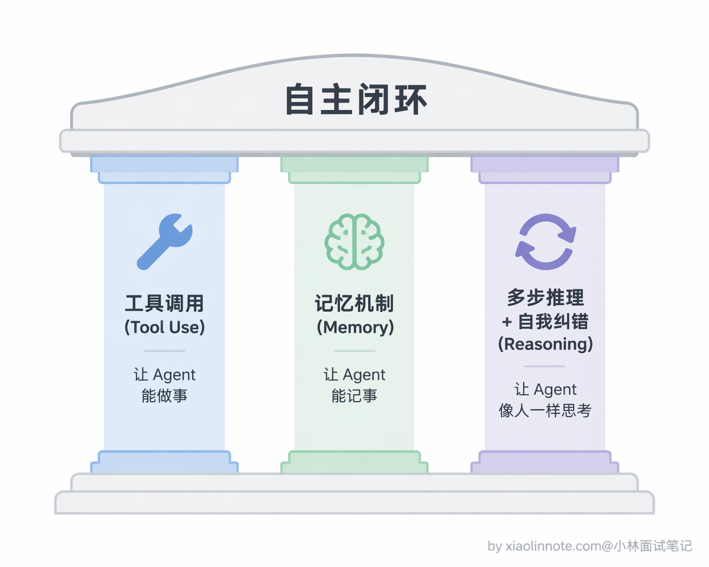
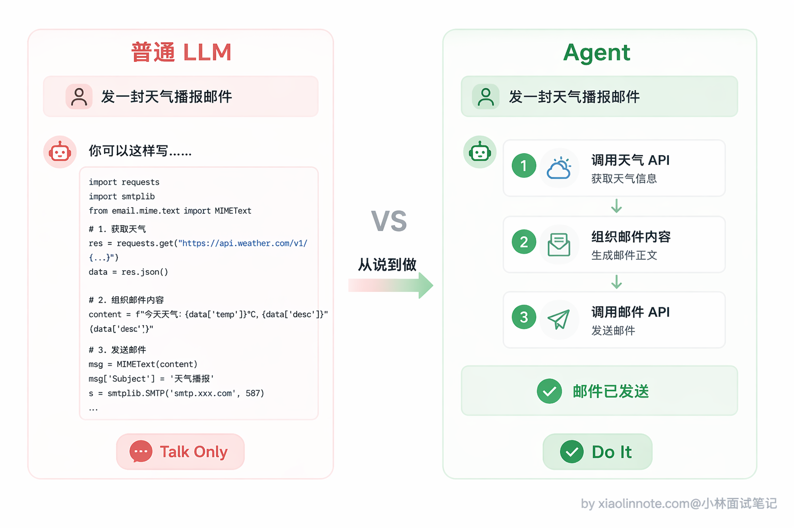
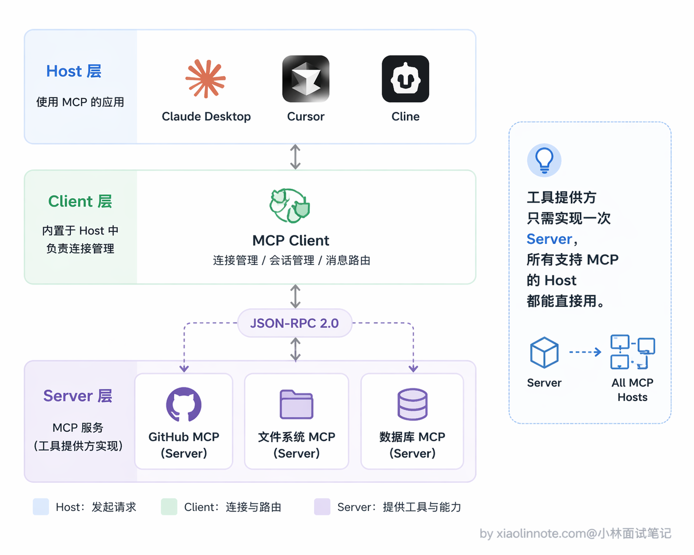
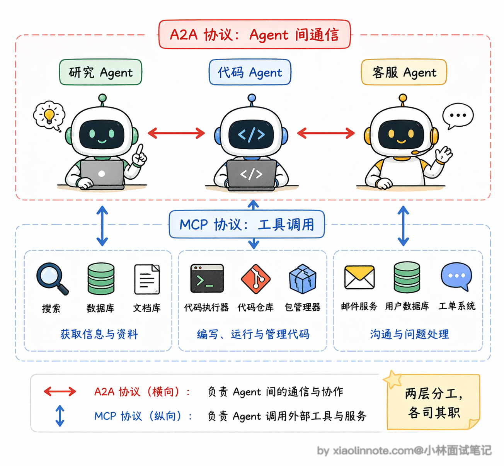

什么是 Agent？与大模型有什么本质不同？
👔面试官：说说你理解的 AI Agent 是什么？
🙋♂️我：Agent 就是给大模型加了插件，比如 ChatGPT 的插件功能，让它能联网搜索、调用 API 啥的。
👔面试官：插件是 Agent？那 ChatGPT 开了搜索功能就是 Agent 了？你说的只是工具调用，跟 Agent 差远了。
🙋♂️我：哦，那 Agent 就是能调用工具的大模型，给它配几个工具函数，它就能做更多事了。
👔面试官：还是工具调用。Agent 最核心的是什么？你有没有提到「自主」两个字？
🙋♂️我：自主……就是它自己决定调哪个工具？
👔面试官：还不够。自主规划、多步执行、感知结果再调整，这才是 Agent 的闭环。你给它个目标，它自己把任务拆成多步，一步一步做，每步结果反馈回来再指导下一步，这和普通调工具有本质区别。
被问懵了吧，其实答好这道题，抓住一个核心词就行：「自主闭环」。
💡 简要回答
我理解 Agent 本质上是一个能自主完成目标的 AI 系统，跟传统 AI 最核心的区别在于「自主性」和「能行动」。
传统 AI 是你问一个问题它回答一个问题，每次都是独立的，被动响应；而 Agent 有自己的规划能力，你给它一个复杂目标，它会自己把任务拆成多步，通过调工具、访问记忆、感知环境来一步步执行，直到完成。
它不只是输出文字，而是真的能做事。
📝 详细解析
普通大模型的局限性
要理解 Agent，得先说说普通大模型的局限性在哪。
你直接调用 GPT 的 chat 接口，它本质上是个「问答机器」，你给它一个输入，它给你一个输出，然后就结束了。就算是多轮对话，它也只是在当前上下文里被动响应你，它不会主动去做任何事，也不知道自己上一步做了什么、下一步该做什么。你可以把它想象成一个只会答题的人，你说一句它答一句，但让它「自己去查个资料再来汇报你」，它完全做不到。
那普通大模型到底差在哪？我们来一层一层拆。最直观的一个问题是「知识被冻结」，模型的训练数据有截止日期，你问它今天的天气、最新的股价，它完全不知道，因为它没有任何途径去获取实时信息。这就好比一个人毕业之后就再也不看新闻了，你问他今天发生了什么，他只能给你讲课本上的知识。
在「知识冻结」之上，还有一个更本质的问题：它「不能行动」。你让它帮你发邮件、帮你查数据库、帮你执行一段代码，它只能告诉你「你可以这样做」，但它自己做不到。为什么？因为它本质上就是一个文本生成器，所有输出都是一串文字，仅此而已。它能给你写出一封完美的邮件正文，但点那个「发送」按钮的事情，它是真做不了的。

而且更麻烦的是，就算你想让它帮你做一件稍微复杂点的事，比如「先查资料再整理成报告」，它也干不了，因为它「没有持续状态」。每次调用之间它是完全失忆的，除非你手动把之前的对话塞进去，不然它根本不记得上一轮说了什么，更别说跨任务去记住你的偏好了。
这三个局限一环扣一环：知识是死的，手脚是没有的，记忆也是断的。加在一起，意味着普通 LLM 只能做「一问一答」的事情，稍微复杂一点的、需要多步骤协作的任务，它就完全无能为力了。

Agent 特别在哪？
Agent 就完全不一样了。它有一个核心的运作闭环：感知 -> 规划 -> 行动 -> 再感知。

你给它一个目标，比如「帮我调研竞品然后整理成报告」，它不是直接输出一段文字了事，而是先拆解任务，我要搜索哪些关键词、我要访问哪些网站、我要怎么组织内容，然后一步一步去执行，每一步的结果又反馈回来，指导下一步怎么做。
这种能力背后，有三件核心的事在支撑，我一个一个讲。

第一件：工具调用（Tool Use），这是让 Agent 从「说话」变成「做事」的关键。Agent 能调用外部工具，比如搜索引擎、代码执行器、数据库、API 等等。不过这里有一个容易误解的地方：不是模型自己执行，而是模型「告诉你该调什么」，你的代码去真正执行，结果再反馈给模型。模型始终只是大脑，不是手脚。
为什么工具调用如此重要？因为它一下子突破了前面说的三个局限。知识被冻结？接上搜索引擎，模型就能获取实时信息。不能行动？接上邮件 API、代码执行器，模型就能真正做事。这就好比一个人原来只能用嘴说话，现在给他配了手、脚和各种工具，能力上限瞬间拔高了一个量级。
我来举个最具体的例子。假设你给 Agent 配了两个工具：查天气和发邮件，然后让它「帮我查一下北京天气，发邮件给老板」：
# 这里定义了两个工具，就像给 Agent 配了两个「技能说明书」
# 注意：这里没有一行真正执行的逻辑，只是告诉模型「我有哪些能力、需要哪些参数」
tools = [
{
"name": "get_weather",
"description": "获取指定城市的当前天气",
"parameters": {
"type": "object",
"properties": {
"city": {"type": "string", "description": "城市名称"}
},
"required": ["city"]
}
},
{
"name": "send_email",
"description": "发送邮件给指定收件人",
"parameters": {
"type": "object",
"properties": {
"to": {"type": "string"},
"subject": {"type": "string"},
"body": {"type": "string"}
},
"required": ["to", "subject", "body"]
}
}
]
# 你告诉 Agent："帮我查一下北京天气，然后发邮件给 boss@company.com"
# Agent 不是一次性回答，而是分两步真正执行：
# 第一步：调用 get_weather(city="北京") → 得到 "晴天 15°C"
# 第二步：调用 send_email(to="boss@company.com", subject="今日天气", body="北京今天晴天 15°C")
# 每一步都是真实发生的，不是在"假装"
你看这段代码，工具定义里没有一行执行逻辑，只有「名字、描述、需要哪些参数」，本质上就是一份说明书。模型读了这份说明书，自己决定该调哪个工具、参数填什么，然后把决策以 JSON 格式告诉你，真正执行的还是你的代码。这个「决策和执行分离」的思想，是理解工具调用最核心的一点。

理解了工具调用之后，你会发现 Agent 光有「做事」的能力还不够，它还得「记事」。这就引出了第二件核心的事。

第二件：记忆机制。传统 LLM 每次对话都是「失忆」的，除非你手动传上下文，不然它完全不记得上一次说了什么。而 Agent 系统通常会设计短期记忆和长期记忆两层。短期记忆就是当前任务执行过程中的中间状态，比如第一步搜索到了什么、第二步计算结果是多少，这些都存在上下文里，保证 Agent 不会做到一半忘了前面发生了什么。长期记忆则是跨任务的，比如用户的偏好、历史操作记录，通常用向量数据库来存储，需要的时候做语义检索拿回来。有了这两层记忆，Agent 在执行复杂任务时才能保持连贯性，不会走着走着忘了目标是什么。
那有了工具能做事、有了记忆能记事，Agent 就完整了吗？还差最后一块拼图，也是 Agent 最像「人」的地方。
第三件：多步推理和自我纠错。这一点经常被忽略，但其实是 Agent 区别于简单自动化脚本的关键。
Agent 在执行过程中如果某一步失败了，它不会直接崩掉，而是能感知到失败、分析原因、换一种方式重试。比如用关键词 A 搜索没找到有用信息，它会自己换关键词 B 再搜一次；调用某个 API 报错了，它会看报错信息然后调整参数重新调用。
这就像一个真正在「思考」的执行者，碰到障碍会绕路走，而不是一条路走到黑。更进一步，它还能在完成某一步之后回头审视：我做的这步对不对？结果和预期一致吗？要不要调整后续的计划？
这种「边做边反思」的能力，让 Agent 在面对复杂、不确定的任务时，表现远比死板的自动化流程好得多。
讲完这三件事，我们用一个最直观的场景来感受一下差距。你让一个普通 LLM「帮我发一封天气播报邮件」，它能做的只是告诉你「你可以这样写代码……」；而一个 Agent，它会真的去调天气 API、拿到数据、组织邮件内容、再调邮件发送接口，整个过程自动完成。这就是本质区别：从生成文字，到执行任务。

为什么 Agent 现在才爆发？
你可能会问，Agent 的概念其实很早就有了，为什么到 2024、2025 年才真正火起来？原因是三个条件在最近几年同时成熟了。
第一个条件是大模型的能力跨过了「能用」的门槛。早期的语言模型理解能力有限，你让它做任务拆解、判断下一步该调哪个工具，它根本做不好。但从 GPT-4、Claude 3 这一代开始，模型的推理能力、指令遵循能力有了质的飞跃，它真的能「读懂」复杂指令并做出合理的多步决策了。
第二个条件是工具调用的标准化。OpenAI 在 2023 年推出了 Function Calling 机制，让模型能以结构化的 JSON 格式输出工具调用请求，这个标准很快被各家模型厂商跟进。有了统一的工具调用协议，开发者才能方便地给模型接上各种外部能力，不然每接一个工具都要自己写一套解析逻辑，工程成本太高。
第三个条件是配套生态的完善。LangChain、LlamaIndex 这些框架把 Agent 的开发门槛大幅降低了，向量数据库解决了长期记忆的存储问题，各种 API 服务让可调用的工具越来越丰富。三个条件凑齐，Agent 从论文概念变成了工程实践，这才有了现在的爆发。
Agent 生态的最新趋势
Agent 火起来之后，一个很自然的问题就冒出来了：Agent 越来越多，它们之间怎么协作？工具越来越多，怎么统一管理？这两个问题催生了两个非常重要的标准协议，面试里被问到的概率很高，值得了解一下。
第一个是 Anthropic 在 2024 年底提出的 MCP（Model Context Protocol，模型上下文协议）。你可以把 MCP 理解成 Agent 工具世界的「USB-C 接口」。
在没有 MCP 之前，每个 Agent 框架接每个工具都要写一套适配代码，假设有 M 个 Agent 框架和 N 个工具，就需要 M x N 套适配逻辑，工程成本非常高。MCP 的做法是定义一套标准的 JSON-RPC 协议，工具提供方只要按这个标准暴露自己的能力（变成一个 MCP Server），任何支持 MCP 的 Agent（通过内置的 MCP Client）都能直接发现和调用这些工具，不需要额外写适配代码。
MCP 的架构分三层：最外层是 Host（就是用户直接交互的 AI 应用，比如 Claude Desktop、Cursor 这些），中间是 Client（负责和 MCP Server 建立连接、管理通信），最里层是 Server（真正暴露工具能力的服务）。

2025 年 12 月 Anthropic 把 MCP 正式捐给了 Linux 基金会旗下新成立的 Agentic AI Foundation（AAIF），由 Anthropic、Block、OpenAI 共同创立，Google、Microsoft、AWS、Cloudflare、Bloomberg 等都表示支持，生态发展非常快，目前已经有数千个公开的 MCP Server 可用。
第二个是 Google 在 2025 年 4 月推出的 A2A（Agent2Agent，Agent 间通信协议）。如果说 MCP 解决的是「Agent 怎么调用工具」的问题，A2A 解决的就是「Agent 怎么和另一个 Agent 协作」的问题。
在多 Agent 系统里，不同的 Agent 可能来自不同的厂商、用不同的框架开发，它们之间怎么互相发现对方的能力、怎么协调任务、怎么传递中间结果？A2A 的核心设计是一个叫 Agent Card 的概念，每个 Agent 都有一张「名片」，上面写着它能做什么、正在做什么、需要什么输入，其他 Agent 读了这张名片就知道该怎么跟它协作。
A2A 在 2025 年 6 月被 Google 捐给了 Linux 基金会维护，SAP、Salesforce、ServiceNow 等大厂都在接入。
这两个协议的关系其实是互补的：MCP 管的是 Agent 和工具之间的连接，A2A 管的是 Agent 和 Agent 之间的通信。你可以这样理解，MCP 让每个 Agent 都能方便地「伸手拿工具」，A2A 让不同的 Agent 能方便地「互相说话合作」。未来的 Agent 生态大概率是两个协议同时存在、各管一层的格局。面试的时候能把这两个协议的定位和区别说清楚，会非常加分。

🎯 面试总结
回顾开头的对话，踩了三个典型的雷。
第一个雷是把 Agent 等同于「插件」或「工具调用」，这是最常见的误区，工具调用只是 Agent 能力的一部分，不是 Agent 本身。
第二个雷是停在「能调工具」这一层，没有点出自主性，Agent 的关键不是「有工具」，而是「自己决定用不用、什么时候用、用哪个」。
第三个雷是忽略了执行闭环，感知 -> 规划 -> 行动 -> 再感知这个循环才是 Agent 区别于普通 LLM 的核心机制。
面试时答这道题，一定要点出三件事：一是 Agent 有自主规划能力，给它一个复杂目标它能自己拆解成多步；二是它能行动，通过工具调用跟外部世界真实交互；三是它有闭环，每步的结果会反馈回来指导下一步，而不是一次性生成完就结束。另外还要提一句容易混的点：模型本身只是「大脑」，工具的真正执行是你的代码，模型只负责决策。